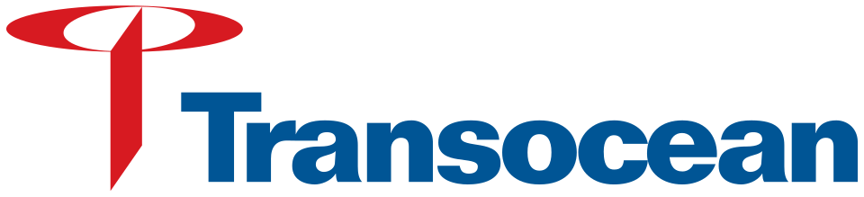

Transocean
Transocean은 스위스 Steinhausen에 본사를 둔 해양 시추 기업이다. 매출 기준으로 세계 최대의 해양 시추 계약업체이며, 석유·가스 업계의 대기업을 상대로 시추 계약을 수행한다.
최종 업데이트

Transocean는 어떤 브랜드인가
Transocean은 해양 시추 서비스를 제공하는 스위스 기업으로, 매출 기준 세계 최대의 해양 시추 계약업체이다. 주된 사업은 석유·가스 업계의 다른 대기업과 맺는 계약이다.
2019년에는 Royal Dutch Shell, Equinor, Chevron이 각각 매출의 26%, 21%, 17%를 차지했다. 캐나다, 미국, 노르웨이, 영국, 인도, 브라질, 싱가포르, 인도네시아, 말레이시아를 포함한 20개국에 사무소를 둔다.
2010년에는 멕시코만에서 자사 시추 장비 Deepwater Horizon이 폭발해 발생한 원유 유출 사고에서 전체 책임의 30%를 지는 부분적 책임이 있다고 판단되었다. 본사는 스위스 Steinhausen에 위치하며 설립 연도는 1973년으로 기록되어 있다.
Transocean는 어떻게 시작되고 성장했나
Transocean은 Southern Natural Gas Company, 훗날의 Sonat이 여러 소규모 시추 회사와 합병하는 과정에서 형성되었다. 1953년 Birmingham, Alabama에 기반을 둔 Southern Natural Gas Company가 DeLong-McDermott 시추 사업을 인수한 뒤 The Offshore Company를 세웠다.
1954년에는 멕시코만에서 최초의 이동식 잭업 시추 장비인 Rig 51을 가동했다. 1996년 노르웨이 그룹 Transocean ASA를 US$1.5 billion에 인수했고, 1999년에는 Schlumberger의 해양 시추 자회사 Sedco Forex와 합병했다.
2007년에는 GlobalSantaFe Corporation과 합병했다.
Transocean의 브랜드 아이덴티티는 무엇인가
매출 기준 세계 최대의 해양 시추 계약업체로, 고사양 심해 시추에 집중하며 Deepwater Horizon 사고의 부분적 책임 당사자이기도 하다.
Transocean의 대표 제품과 서비스는 무엇인가
주된 사업은 석유·가스 업계의 대기업을 상대로 한 해양 시추 계약이다. 1996년 인수 이후 출범한 Transocean Offshore는 당시 3,000 feet이던 시추 깊이를 10,000 feet까지 늘린 장비를 갖추고, 한 선박에서 두 개의 시추 작업을 동시에 운영하는 대규모 시추 사업을 구축했다.
첫 선박 Discoverer Enterprise는 약 US$430 million이 들었고 길이는 834 ft (254 m)였으며, Enterprise class 시추선은 시추선 가운데 가장 크다. 2005년 Discoverer Spirit는 34,189 ft (10,421 m)의 가장 깊은 해양 석유·가스 시추정 기록을 세웠다.
2012년에는 천해 시추 장비 38기를 매각하고 고사양 심해 시추 장비에 집중했다.
Transocean는 지금 어떤 상태인가
Transocean Ltd.는 스위스 Steinhausen에 주요 경영 사무소를 두고 20개국에서 사무소를 운영한다. 2013년 10월에는 S&P 500 지수에 편입되어 Dell을 대체했다.
2015년 2월에는 US$2.2 billion의 분기 손실이 발생한 뒤 CEO Steven Newman이 물러났다. 매출 기준 세계 최대의 해양 시추 계약업체라는 위치는 이어진다.
Transocean 로고는 어떻게 변해왔나
자주 묻는 질문
Transocean는 어느 나라 브랜드인가요?
Transocean는 스위스의 에너지·산업재 브랜드입니다.
Transocean는 언제 설립되었나요?
Transocean는 1973년 설립되었습니다.
Transocean의 브랜드 아이덴티티는 무엇인가요?
매출 기준 세계 최대의 해양 시추 계약업체로, 고사양 심해 시추에 집중하며 Deepwater Horizon 사고의 부분적 책임 당사자이기도 하다.
Transocean의 대표 제품은 무엇인가요?
주된 사업은 석유·가스 업계의 대기업을 상대로 한 해양 시추 계약이다.
Transocean는 현재 어떤 상태인가요?
Transocean Ltd.는 스위스 Steinhausen에 주요 경영 사무소를 두고 20개국에서 사무소를 운영한다.
Transocean의 본사는 어디에 있나요?
Transocean의 본사는 Steinhausen에 있습니다(위키데이터 기준).
Transocean의 공식 웹사이트는 어디인가요?
Transocean의 공식 웹사이트는 http://www.deepwater.com/ 입니다.
출처와 검증
Transocean 관련 참고: 공식 웹사이트 · 위키데이터 Q686785 · 영어 위키백과. 브랜드명은 한글과 원어를 함께 표기하되 데이터에 없는 표기는 만들지 않습니다. 기원 국가·설립연도는 검수된 정의문에서 확인된 값을 우선하고, 없을 때만 공식 웹사이트 URL이 일치하는 위키데이터 개체의 값을 씁니다. 위키데이터 값은 2026-11-15 기준입니다.